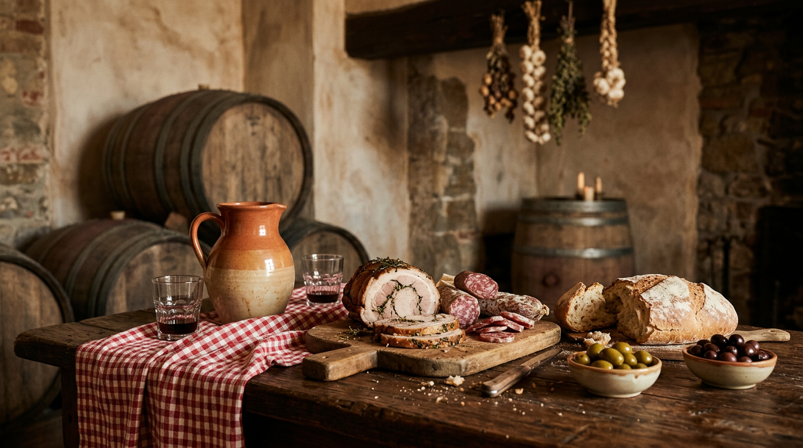

Le fraschette — l'osteria dei Castelli.

Una frasca appesa sopra la porta, qualche botte, panche di legno e una brocca di vino dell'annata. Per secoli ai Castelli Romani non serviva altro per fare festa. Novembre, il mese del vino nuovo, è il momento giusto per capire cos'è davvero una fraschetta, e come ci si comporta quando ci si siede.
Una frasca sopra la porta
La fraschetta è un locale popolare dedicato alla mescita del vino novello, eventualmente accompagnato da cibi semplici, diffuso soprattutto ai Castelli Romani. Il nome viene probabilmente dall'usanza medievale, comune a varie zone d'Italia, di appendere una frasca carica di foglie, spesso d'alloro, sopra l'ingresso delle case dove si poteva bere a pagamento il vino nuovo: una vera insegna, che permetteva ai vignaioli di rifarsi delle spese della vendemmia (Wikipedia). Un'altra ipotesi lega la parola a Frascata, l'antico nome di Frascati, ma è considerata meno probabile (Wikipedia).
A differenza dell'osteria, gestita a lungo da un oste, la fraschetta poteva nascere dall'iniziativa di un piccolo produttore che vendeva il proprio vino per un periodo limitato (Wikipedia). Tra Ottocento e Novecento le più rinomate erano a Frascati, Grottaferrata, Marino e Albano; oggi il loro regno indiscusso è il centro storico di Ariccia (Wikipedia).
Il tempo dei fagottari
L'arredo era essenziale: le botti allineate su un lato, panche e tavolacci, qualche attrezzo da vino alle pareti, la cantina interrata in fondo. Non c'era cucina: oltre al vino si trovavano al massimo pane e uova sode, per preparare il palato. Il resto lo si portava da casa, spesso in fagotti di canapa, da cui il nomignolo, prima neutro poi bonariamente ironico, di fagottari (Wikipedia). Presto accanto alle fraschette comparvero i banchi di chi vendeva il companatico, e tra questi la porchetta (Wikipedia).
Una frasca carica di foglie sopra la porta: era l'insegna del vino nuovo.La tradizione dei Castelli Romani
Cosa si mangia oggi
Solo in epoca moderna nelle fraschette è diventato possibile fare un pasto completo, e oggi molte hanno una cucina vera (Wikipedia). Il rito però è rimasto: si comincia con salumi, formaggi freschi e stagionati, olive, sottoli e sottaceti, in porzioni così generose che spesso il primo diventa facoltativo e il secondo una rarità. Se si arriva ai primi, sono quelli della cucina romana: carbonara, amatriciana, arrabbiata (Wikipedia). Al centro della tavola c'è la porchetta di Ariccia, Igp dal 14 giugno 2011, preparata disossando il maiale e insaporendolo con rosmarino, pepe nero e aglio (Wikipedia).
Come si beve
Il vino è sfuso e arriva in caraffe dai nomi antichi: il boccale da due litri, detto anche Barzilai dal politico romano di fine Ottocento che offriva vino ai suoi elettori, il mezzo boccale o tubbo da un litro, la fojetta da mezzo litro e il quartino (Wikipedia). Il vino tipico è la Romanella, un rosso leggermente frizzante (Wikipedia). La tradizione ne lega il nome a Giovanna Rinaldi, perpetua del cardinale Ferdinando Taverna, soprannominata appunto Romanella (La Cucina Italiana). Accanto si trovano i vini dei Colli Albani, di cui abbiamo parlato nella guida al vino dei Castelli.
Le stagioni della fraschetta
La fraschetta nasce legata al calendario della vigna: era il luogo dove si vendeva e si assaggiava direttamente il vino prodotto in quell'annata (Wikipedia). Per questo novembre, quando il vino nuovo è pronto, conserva qualcosa del suo significato originale. L'altro grande appuntamento è a settembre, con la Sagra della Porchetta di Ariccia, nata nel 1950 e celebrata ogni anno in quel mese (Wikipedia). Le fraschette restano frequentate tutto l'anno, da chi vive ai Castelli come dai romani e dai turisti (Wikipedia).
Consigli pratici
Da Castel Gandolfo le fraschette più vicine sono quelle di Ariccia, poco oltre Albano. Molti locali propongono menu fissi con antipasto, un primo, vino e acqua: a titolo indicativo, un menu fisso da 25 euro in una fraschetta del centro (TheFork). I prezzi cambiano da un locale all'altro, quindi conviene chiedere prima di ordinare. In alcuni casi è ancora possibile godere dell'ospitalità alla vecchia maniera (Wikipedia): chi vuole portare qualcosa da casa, però, lo chieda sempre all'oste. Per un itinerario tra i Castelli, Visit Lazio propone un percorso di fraschetta in fraschetta (Visit Lazio).